ECE here is the abbreviation for Electrical computer engineering. This term has meanings for both program I studying at olin college and my hobby in everyday life.
Since 2019, I have been an enthusiast for both electronics and linux for 4 years. Accumulated some skill and precious memory on these stuff. For the degree sense, I'm chasing Electrical and Computer Engineering ABET-accredited degree at Franklin.W.Olin College of Engineering. It's fun and take my skill to professional level.
Below is the list for my projects and gallary of playing with electronics, most of them are mini projects that I made for fun, while the others are courseworks at Olin College.
| Project name | Partner | instructor | Status |
|---|---|---|---|
| Python package and module for DarkQuest | / | / | Ongoing |
| Digital camera based on Rp2040 | Zachary Sherman | Bradley Minch | Complete |
| Integrated Rover | Satchel Sevenau | Melinda, Kene, Brad, Amon | Complete |
| Auto-sync digital clock based on esp32 | / | / | Complete |
| Particle decay distance calculator | / | / | Complete |
| Python based CCTV server | / | / | Ongoing |
| ESP32 webcam with face recognition | / | / | Complete |
| iPad connected home server | / | / | Complete |
| Dowling pi pico based on RP2040 | / | Bradley Minch | Complete |
| Arduino LCD display w/ control | / | / | Complete |
| Raspberry Pi LCD display w/ control | / | / | Complete |
| NAS based on ThinkPad x201i(upgrade + docking station) | / | / | complete |


 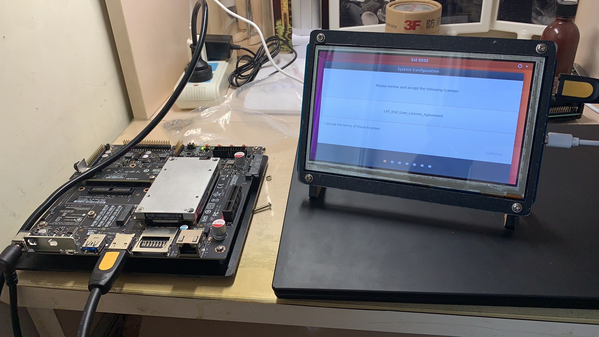
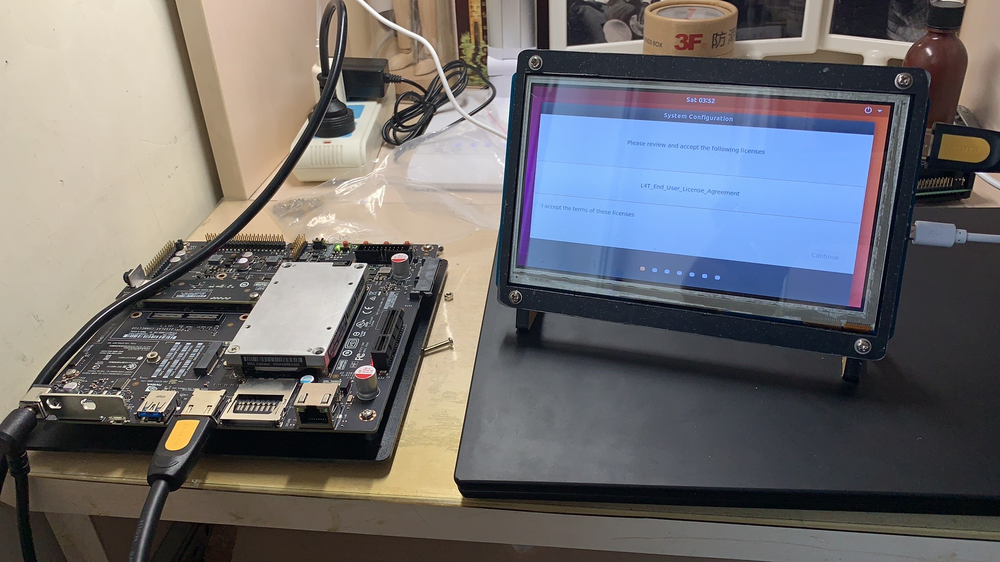


 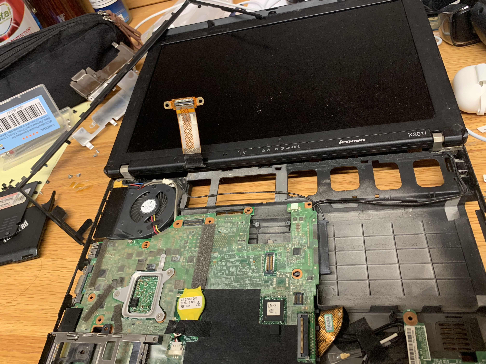
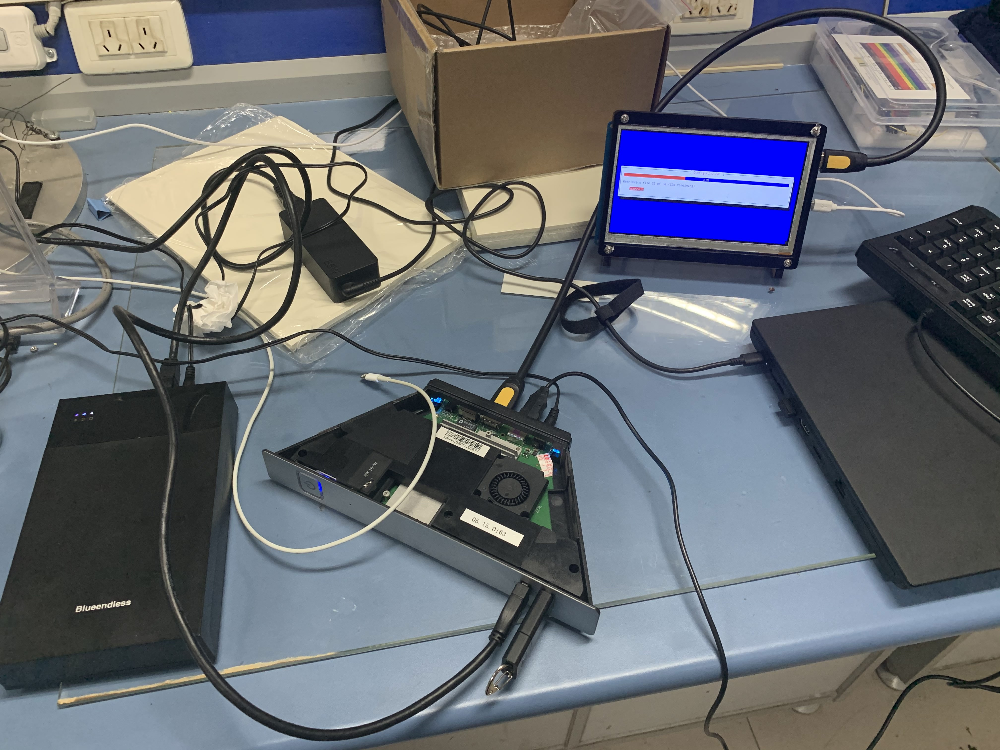
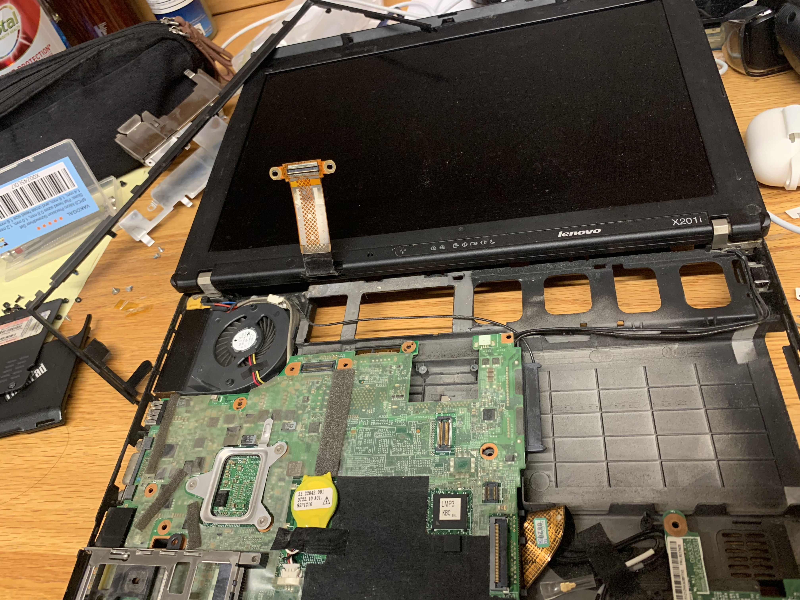
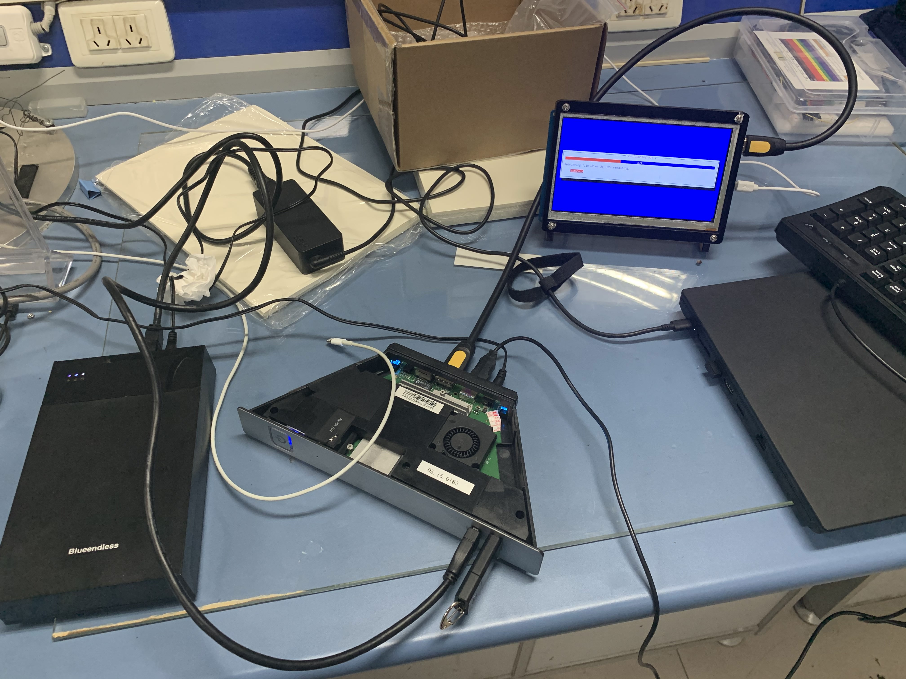


 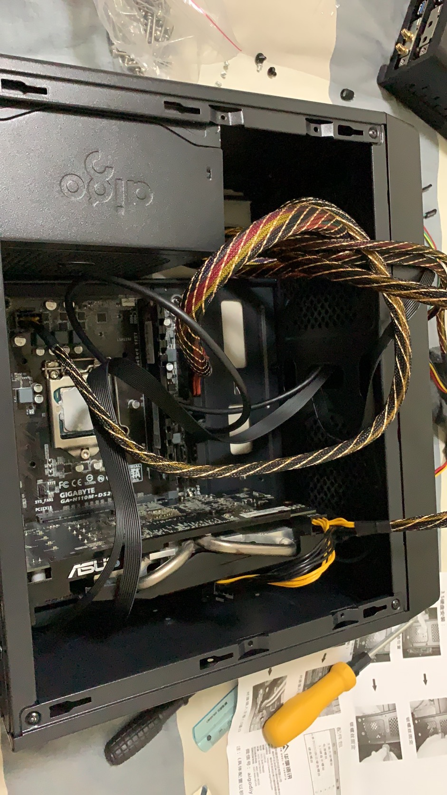
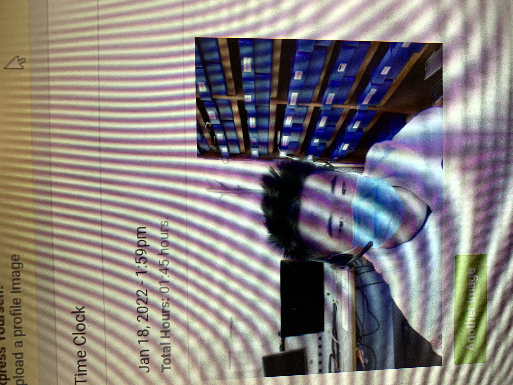
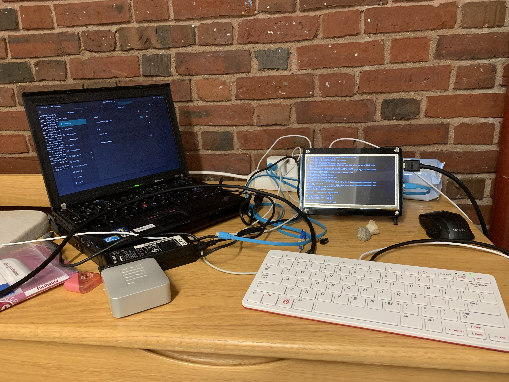
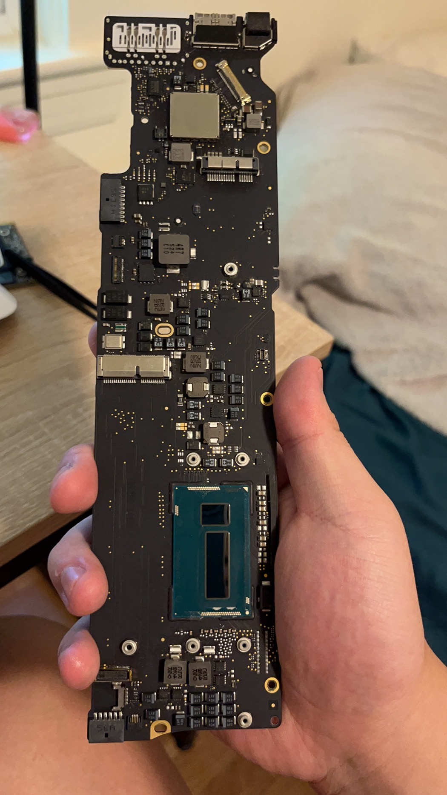
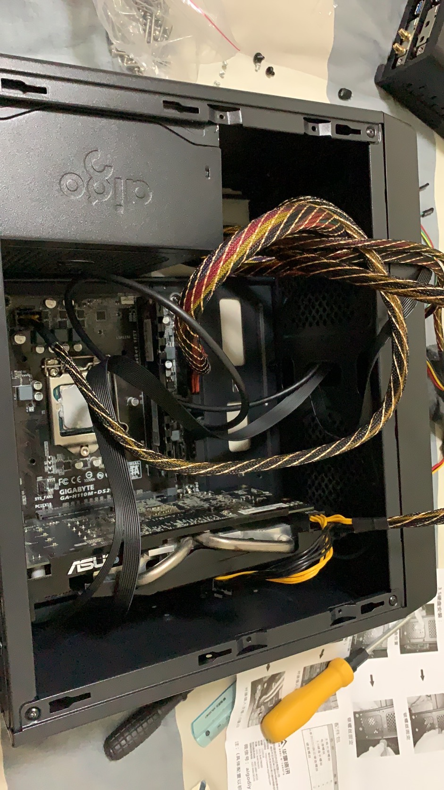
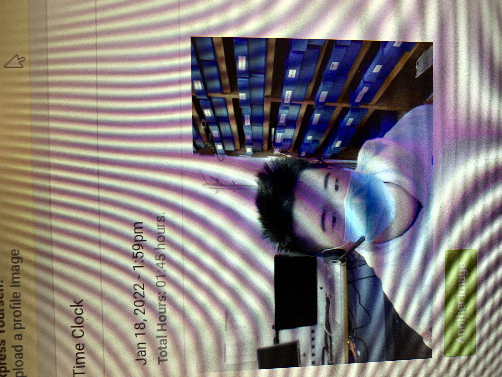
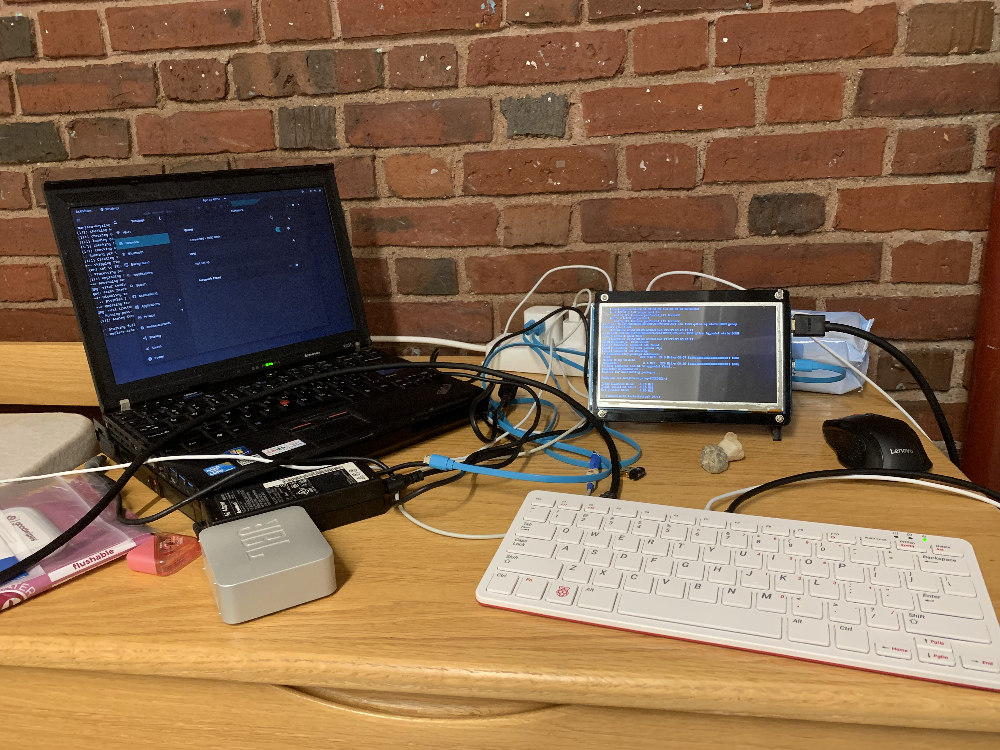
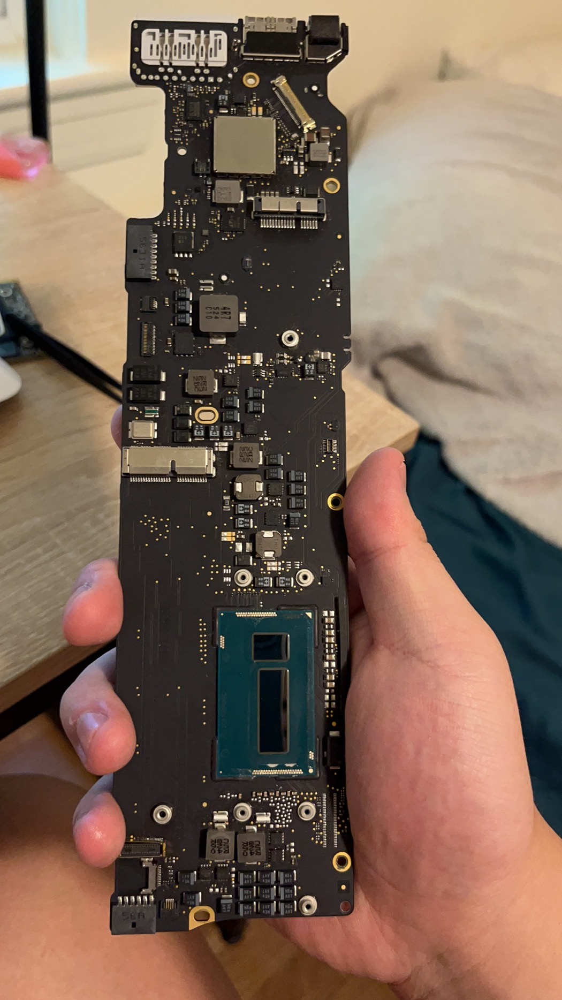